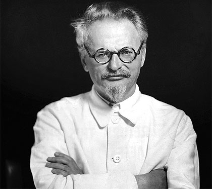
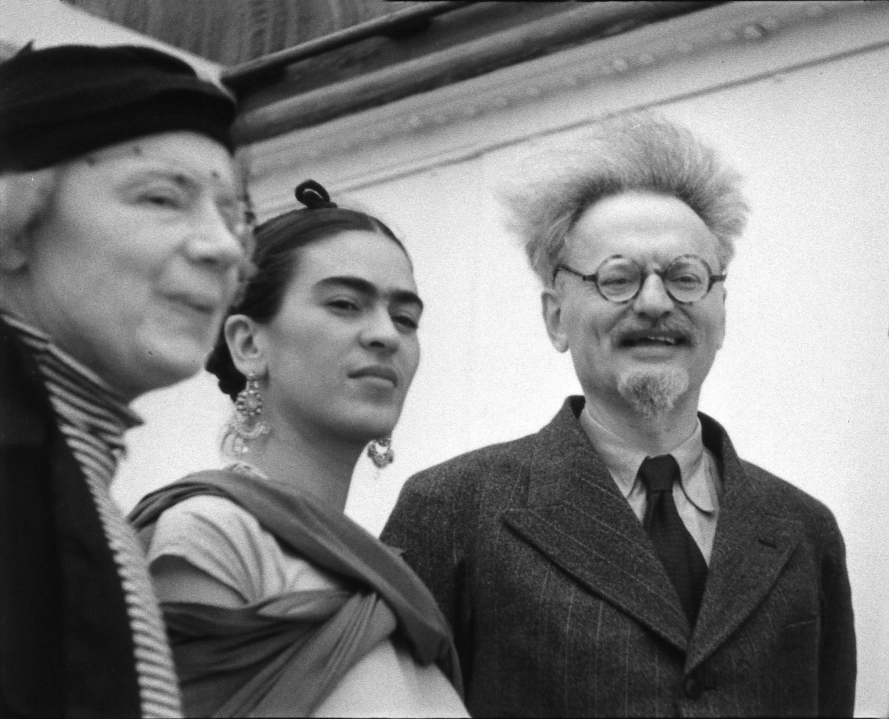
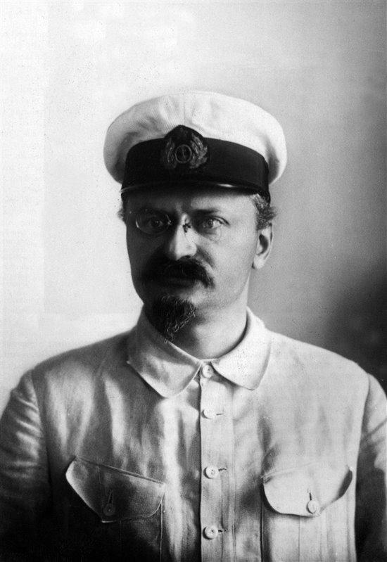
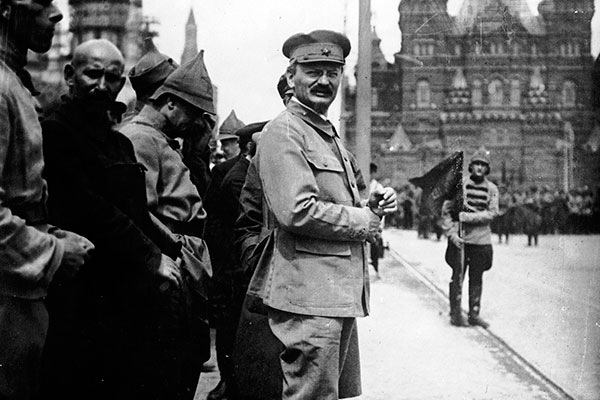
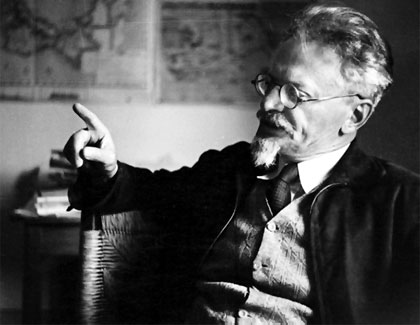

Lev Davídovich Bronstein, más conocido como Lev Trotski o León Trotski, fue un político y revolucionario ruso de origen judío, nacido en Yanovka, Ucrania en el año 1877.

Nació en una familia judía de labradores propietarios y estudió derecho en la Universidad de Odessa. Participó desde joven en la oposición clandestina contra el régimen autocrático de los zares, organizando una Liga Obrera del Sur de Rusia (1897).
Fue detenido varias veces y desterrado a Siberia; pero consiguió huir de allí en 1902 y se unió en Londres al que ya aparecía como jefe de la oposición socialdemócrata en el exilio: Lenin. Aunque discrepaba de su concepción autoritaria del partido, colaboró con él e intentó en vano reconciliar a la facción que dirigía (los bolcheviques) con la facción rival de la socialdemocracia rusa (los mencheviques).

Fue detenido varias veces y desterrado a Siberia; pero consiguió huir de allí en 1902 y se unió en Londres al que ya aparecía como jefe de la oposición socialdemócrata en el exilio: Lenin. Aunque discrepaba de su concepción autoritaria del partido, colaboró con él e intentó en vano reconciliar a la facción que dirigía (los bolcheviques) con la facción rival de la socialdemocracia rusa (los mencheviques).
Regresó a Rusia para participar en la Revolución de 1905 (en la cual organizó el primer sóviet o consejo revolucionario). Al fracasar la revolución, fue deportado otra vez a Siberia y nuevamente se escapó (1906). Tras recorrer medio mundo entrando en contacto con los focos de conspiradores revolucionarios, se trasladó a Rusia en cuanto estalló la Revolución de febrero de 1917, que derrocó a Nicolás II.

Abandonando su trayectoria anterior de socialista independiente (en relación con los mencheviques), puso su talento de organizador y de agitador al servicio del Partido Bolchevique y fue elegido presidente del Sóviet de Petrogrado. Desempeñó un papel central en la conquista del poder por Lenin: fue el principal responsable de la toma del Palacio de Invierno por los bolcheviques, que instauró el régimen comunista en Rusia (Revolución de octubre de 1917).
Aunque Lenin ocupó la cúspide del poder, Trotski desempeñó un papel crucial en el gobierno soviético hasta la muerte de aquél. Como primer comisario de Asuntos Exteriores de la Rusia bolchevique (1917-18), negoció con los alemanes la Paz de Brest-Litovsk, que retiró al país de la Primera Guerra Mundial para responder a los deseos de paz de las masas y concentrarse en la consolidación de la Revolución.

Luego fue comisario de Guerra (1918-25), cargo desde el cual organizó el Ejército Rojo en condiciones muy difíciles y derrotó en una larga guerra civil a los llamados ejércitos blancos (contrarrevolucionarios) y a sus aliados occidentales (1918-20). Su labor fue, por tanto, crucial para la supervivencia del primer Estado comunista del mundo.
Lenin le señaló como su sucesor antes de morir en 1924; pero la ambición de Stalin, que contaba con fuertes apoyos en el aparato del partido, le impidió acceder al poder. Trotski defendía la idea de la «revolución permanente» como vía de realización de los ideales marxista-leninistas (extendiendo gradualmente la Revolución a Alemania y a otros países); mientras que Stalin le opuso la concepción más conservadora de consolidar el «socialismo en un solo país».

Las diferencias ideológicas, sin embargo, eran poco más que un pretexto para Stalin, que maniobró hábilmente en busca de aliados y después se deshizo de ellos (incluso físicamente); con estas maniobras consiguió apartar a Trotski de la dirección en 1925, expulsarle del partido en 1927, deportarle a Kazajistán en 1928 y desterrarle del país en 1929.
Trotski no cejó en su lucha revolucionaria, que canalizó desde el exilio escribiendo en defensa de sus ideas (obras como La revolución permanente, 1930; o la Historia de la Revolución Rusa, 1932) y encabezando una corriente comunista disidente (agrupada en la Cuarta Internacional desde 1938). Stalin le hizo asesinar por un agente soviético.